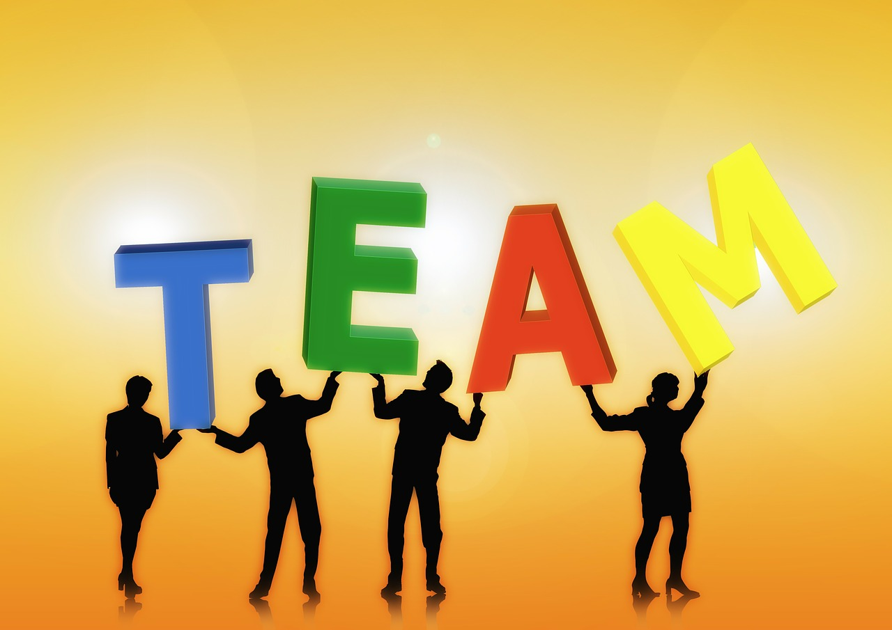

We all need people who will give us feedback. That's how we improve.
Bill Gates
Pair programming is a brand new concept to me. While I have worked on group projects numerous times in the past, the majority of the work was usually completed solo. Pair programming truly embodies team work. While the process can have unique challenges, it has a number of advantages that allow work to be more enjoyable and completed with greater efficiency.
One of the greatest advantages of pairing is the information shared between the driver and navigator. There were numerous times during challenges when my partner and I would miss an important detail or get stuck on some part of the problem. It was extremely beneficial for my partner and I to correct each other and teach each other new programming concepts.Throughout the challenges I have completed, my partner and I strive to learn when we come across a roadblock, and we celebrate our successes (getting 0 failures in rspec!). The fusion of knowledge, encouragement, and hard work makes the challenges more enjoyable, and work gets completed more efficiently.
At the same time, pairing also presents a few challenges. For instance, if I feel that my partner is more knowledgable than I am, I start to think that I am slowing down the session and I have nothing important to contribute. I lose confidence in my abilities, and I feel like I cannot follow what is going on during the session. In addition, there are times when I feel as though my partner has fallen behind in the material, or I notice that the challenge is being completed incorectly. As a result, I become frustrated, and I feel like it would be more efficient if I just took control and completed the challenge alone. Communication is key in situations like this.
After reading my feedback, I have learned a great deal about myself. Most of the constructive feedback I received from my peers had a similar message. I need to work on voicing my thoughts as I program, and I need to try to keep the sessions more organized. The feedback I received is not surprising since I have also noticed that these are areas where I can improve. I appreciate the feedback, and I also like that the feedback promotes improvement. Moving forward, I am going to try to make sure the session is time-boxed and has a clear agenda. In addition, I will try not to get lost in my thoughts. Instead, I will narrate my steps out loud so that it is easier for my partner to stay on the same page as me.
I think the hardest part about giving feedback for me is honesty. It is not difficult for me to highlight my partner's positive qualities; however, when it comes to giving constructive feedback, I fear that I might come off as offensive. I have to keep in mind that everyone at DBC has a shared goal to learn as much as possible. It is always easier to hear what you are doing right; however, positive change can only happen if you are aware of where you need to put in more work. Feedback plays a pivotal role in self-improvement.